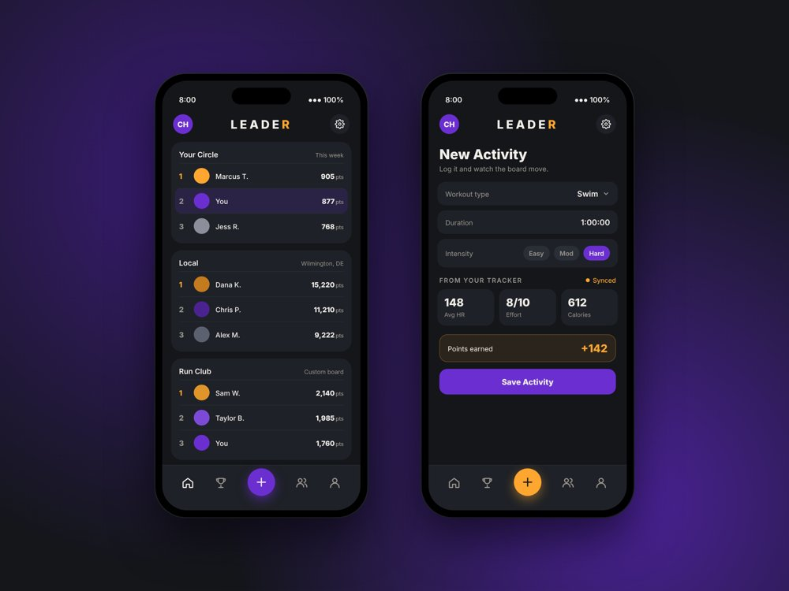
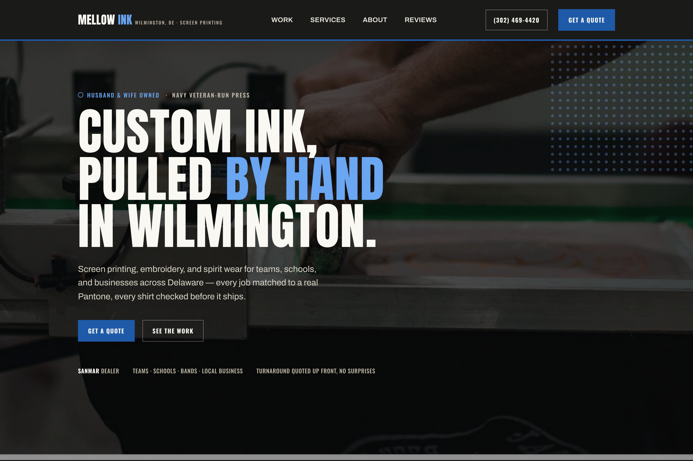
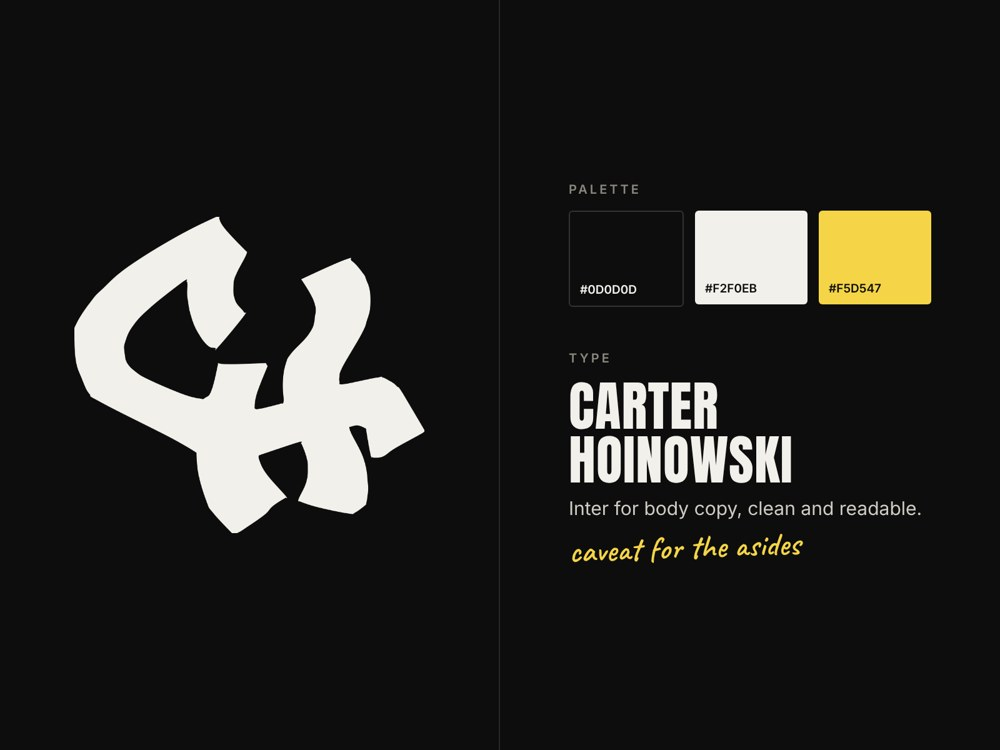
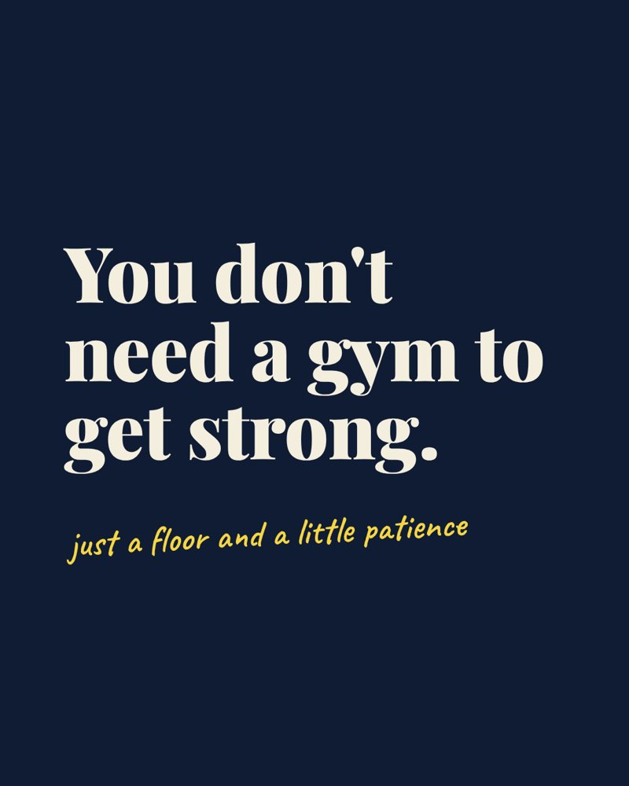

Leader
in progressA fitness tracking app built around competitive leaderboards. Users log workouts across activity types, earn points through a normalized scoring system, and compete with friends or in public groups.
View mockups
A fitness tracking app built around competitive leaderboards. Users log workouts across activity types, earn points through a normalized scoring system, and compete with friends or in public groups.
View mockups
Full redesign for MellowInk, a Wilmington-area screen printing business. Researched competitor sites in the niche, built mockups, and implemented the changes directly on their Squarespace site as an administrator.
View project
A complete personal brand: a custom monogram logo, color palette, typography system, and style guide, designed to work across a content platform and a professional portfolio.
View style guide
A reusable template system for the fitness carousels on my Instagram and TikTok (@carterhoinowski). It's built to keep every post on-brand and fast to produce.
View slidesI'm Carter, a full-stack developer with a graphic design background, finishing my BS in Graphic & Web Design at Wilmington University (December 2026). I came in from IT networking and now split my time between freelance web and design work and building my own projects, from client site redesigns to a full-stack fitness leaderboard app.
Before code I did carpentry and handyman work, so I like building things that hold up. Outside of work I make fitness content on Instagram and TikTok.
I want to work where design and development meet. My design training means I care about layout, type, and how something feels to use, and my dev work means I can build it myself, from the database to the interface. I'm looking for full-stack, front-end, or product engineering roles where I can ship real features, keep growing as an engineer, and help close the gap between design and development.
Open to full-time roles and freelance projects. Email is the best way to reach me.